Example Gallery
This gallery provides some examples.


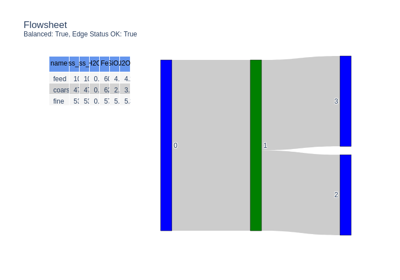
Create Network


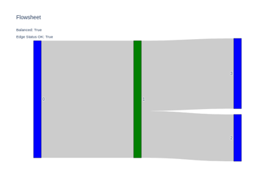
Sankey Plots


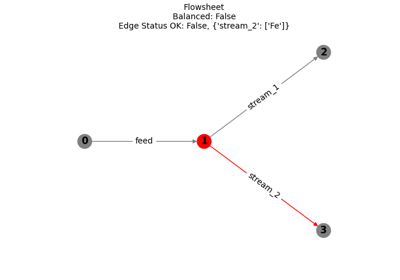
Constraints and Status
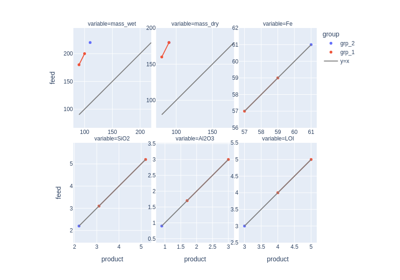
Compare
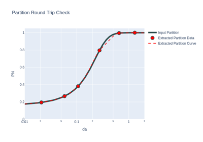
Partition Models
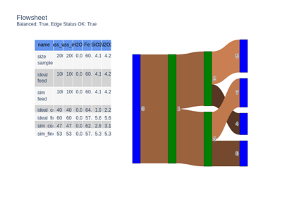
Compare Partition Separations
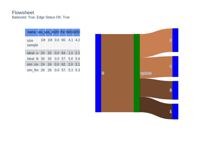
Simplify a Network


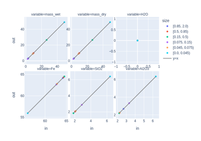
Interval Data - Advanced

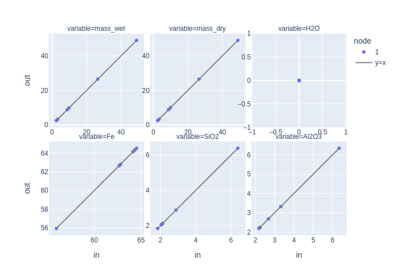
Mass Balancing
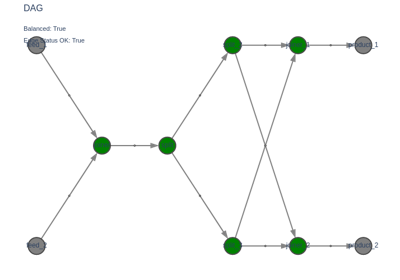
DAG to Define and Simulate
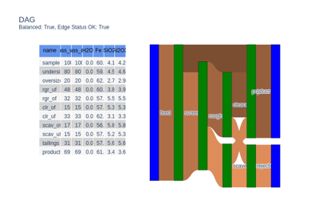
DAG with Partitions
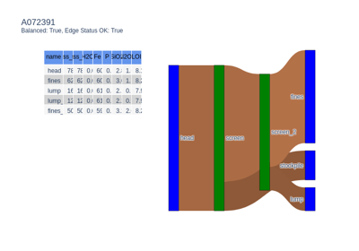
DAG with Estimator
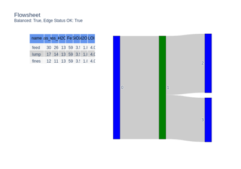
Simulating a Network in Parallel
Simulating a Network in Parallel

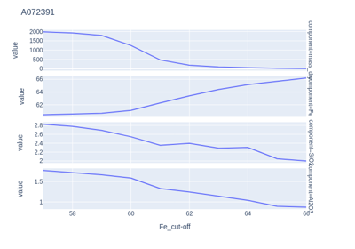
Grade Tonnage
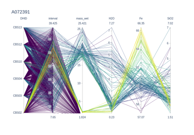
Iron Ore Assays
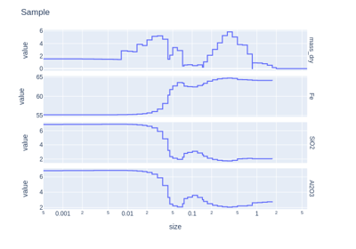
Resampling Interval Data
Xarray Gallery
This gallery provides some examples related to the low level xarray objects.